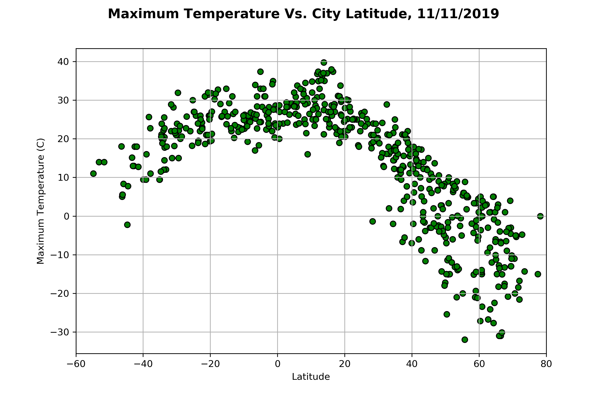
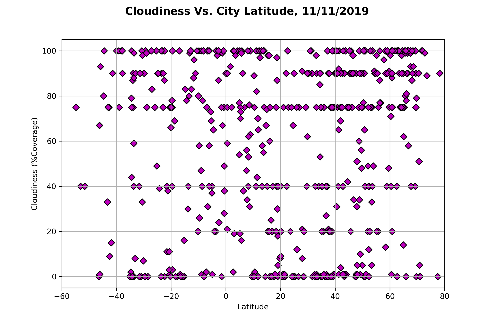
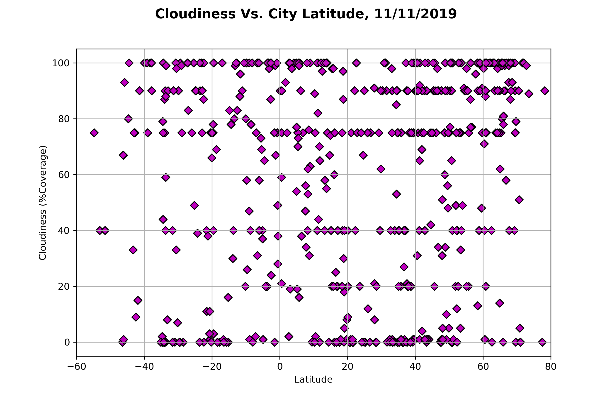

Analysis of weather patterns is an extremely complex problem often requiring supercomputers for predictive capabilities. However, many basic analyses can be performed experimentally using simple correlative tools. As an example of this simplified approach, we acquired data for 557 different cities and evaluated temperature, humidity, cloud cover, and wind speed as a correlative with the latitude of the city. Using this simple correlation, we demonstrate that both correlated and non-correlated measurements are readily identified.
Summary of Study
This study used the OpenWeatherMap API and Python/Pandas data analysis tools to identify weather indicators for 557 random cities. These weather indicators were plotted against the latitude of the city and graphically represented using the MatPlotLib graphical library. The date for analyses was 11/11/2019, but alternative dates are possible for further analyses using the OpenWeather API and Python/Pandas scripts stored in a GitHub Repo linked below. Please note that the cities were identified using citypy, but an alterantive approach would be to use the cities list from OpenWeather.org and the random number generator in Numpy to create a random city list.
Available Plots
 
